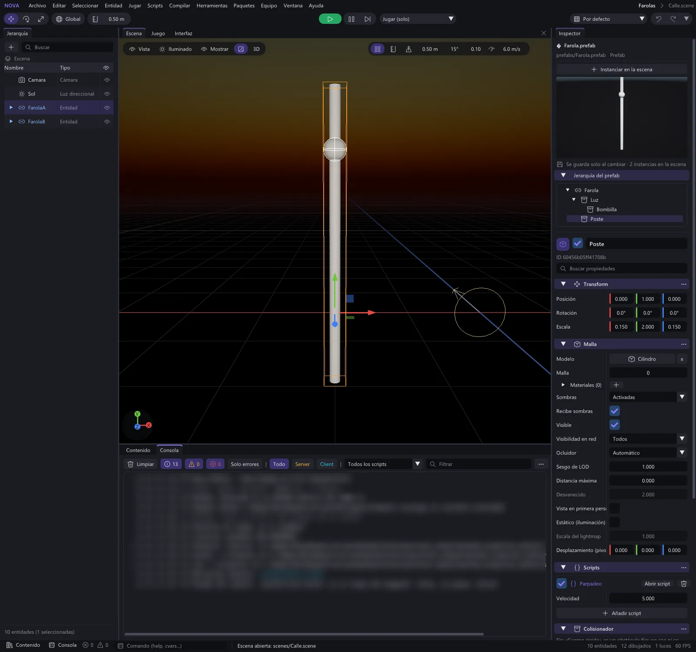
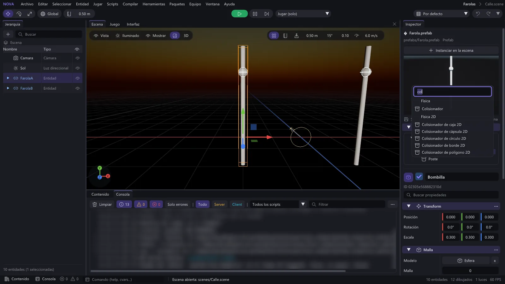

Prefabs
En esta página
Un prefab es una entidad con sus hijos y componentes guardada en un fichero (.prefab) para reutilizarla:
cajas, enemigos, monedas, faroles... Este documento explica cómo crear prefabs, cómo es su formato, cómo
instanciarlos desde el editor y desde código, y qué hacen los botones Aplicar y Revertir.
Crear un prefab#
- Prepara la entidad en la escena con sus hijos, componentes y scripts.
- En la Jerarquía, haz clic derecho sobre ella y elige Crear prefab.
El prefab se guarda:
- en la carpeta que tengas abierta en Contenido, o
- en
assets/prefabs/si Contenido está en la raíz deassets/.
El fichero se llama como la entidad (Caja.prefab); si ya existe, se añade un número (Caja 2.prefab). La
entidad original se convierte en una instancia del prefab: recibe el componente Instancia de prefab y se
muestra en azul en la Jerarquía. Crear el prefab se puede deshacer (la entidad deja de ser instancia; el fichero
se queda).
Formato .prefab#
Es el mismo formato JSON que las escenas (ver
escenas-y-componentes.md), con "nova": "prefab".
La primera entidad es la raíz y no tiene parent ni PrefabInstance. Este es el prefab real
game/sample/assets/prefabs/Caja.prefab:
{
"nova": "prefab",
"version": 1,
"name": "Caja",
"entities": [
{
"id": "a15e9eebebed3a17",
"name": "Caja",
"components": {
"Transform": {
"position": [0, 0.5, 0],
"rotation": [0, 0, 0, 1],
"scale": [1, 1, 1]
},
"MeshRenderer": {
"model": {
"id": "00000000000b0001",
"path": "builtin:Cubo"
},
"mesh": 0,
"materials": [
{
"id": "22eeb8cc1fa2d1f9",
"path": "materials/Caja.mat"
}
],
"castShadows": true
}
}
}
]
}Los UUID de dentro del prefab solo sirven para enlazar padres, hijos y referencias entre sus entidades: cada instancia recibe UUID nuevos. El de la raíz es nuevo (o el que se pida) y los de los hijos se derivan de él, así que con el mismo UUID de raíz salen siempre los mismos (lo usan Revertir y la red, que crea los objetos en los clientes con los UUID del servidor).
Instanciar#
Desde el editor#
| Cómo | Dónde aparece |
|---|---|
| Arrastrar el prefab desde Contenido al visor Escena | En el punto del suelo bajo el ratón (conserva la altura de la raíz del prefab) |
| Arrastrar el prefab sobre una entidad de la Jerarquía | Como hija de esa entidad |
| Seleccionar el prefab en Contenido y pulsar Instanciar en la escena en el Inspector (ver Editar un prefab desde el Inspector) | Delante de la cámara del editor |
Desde un script#
Declara un campo Asset("Prefab") (se elige el prefab en el Inspector) y usa
Scene.Instantiate(prefab, posicion?, padre?, rotacion?). La posición es en coordenadas del mundo; el prefab
también puede ser su ruta ("prefabs/Caja"):
-- Crea una caja (u otro prefab) en fila cada vez que se pulsa la acción Accion (E)
local GeneradorDeCajas = Script()
--[Tooltip("Prefab que se crea al pulsar Accion")]
GeneradorDeCajas.prefab = Asset("Prefab")
--[Range(0, 10)]
GeneradorDeCajas.separacion = 1.5
function GeneradorDeCajas:Start()
self._creados = 0
end
function GeneradorDeCajas:Update(dt: number)
if not Input.WasActionPressed("Accion") or not self.prefab then
return
end
local posicion = self.entity.position + Vec3.new(0, 0, self.separacion * self._creados)
local caja = Scene.Instantiate(self.prefab, posicion)
if caja then
self._creados += 1
Log.Info(string.format("Creada la instancia %d (%s)", self._creados, caja.name))
end
end
return GeneradorDeCajasScene.Instantiate devuelve la raíz de la nueva instancia (o nil si el prefab no existe). Cuando vuelve, el
Awake de sus scripts ya ha pasado (se puede escribir en sus campos en la línea siguiente) y su Start llega al
principio del frame siguiente. La instancia solo existe en esta máquina: en una partida en red, el servidor crea
los objetos que deben ver todos con Spawn (ver
multijugador.md). Para destruirla,
caja:Destroy() o Scene.Destroy(caja, segundos).
Editar un prefab desde el Inspector#
Elige un .prefab en Contenido y el Inspector lo muestra entero, sin instanciarlo (como al elegir un prefab en
el panel Project de otros motores):

| Parte | Qué hace |
|---|---|
| Instanciar en la escena | Crea una instancia delante de la cámara del editor (como siempre) |
| Vista previa | El prefab dibujado con su luz y sus materiales. Se actualiza mientras lo editas (también mientras arrastras un valor). Arrastra con el ratón para girarla, la rueda acerca y aleja, doble clic la deja como al principio |
| Se guarda solo al cambiar · N instancias en la escena | Cuántas instancias del prefab hay en la escena abierta |
| Jerarquía del prefab | La raíz y sus hijos. Clic en una entidad para ver y editar sus componentes debajo |
| La entidad elegida | Lo mismo que el Inspector de una entidad de la escena: casilla de activa, nombre, buscador de propiedades, cada componente con su menú ⋮ (restablecer, copiar, pegar, quitar), los scripts con sus campos y Añadir script, y Añadir componente con su buscador |


Cómo se guarda y qué pasa con las instancias:
- Se guarda solo, al soltar el valor que cambias (o al añadir o quitar un componente o un script), como los materiales, los árboles y las tablas de datos. No hay botón Guardar prefab: así el fichero, la vista previa, las instancias y la edición en equipo nunca están a medias, y cada cambio es un paso del historial.
- Ctrl+Z lo deshace en un solo paso: el fichero vuelve a lo de antes y las instancias también (y Ctrl+Y lo rehace). El paso se llama como el cambio, con el prefab detrás: «Editar Intensidad (prefab Farola)».
- Las instancias de la escena abierta se actualizan en ese mismo paso. Nova no guarda qué campos cambiaste en cada instancia (ver Limitaciones), así que lo deduce: un valor de una instancia que era igual al del prefab pasa al valor nuevo; uno que ya era distinto (lo cambiaste en esa instancia) se respeta. Por ejemplo, si subes la intensidad de la luz del prefab de 3 a 6, las farolas que tenían 3 pasan a 6 y la que pusiste a 9 se queda en 9. Lo mismo para el nombre, el estado activo, cada campo de cada componente y cada campo de cada script; un componente que añades o quitas en el prefab se añade o se quita en las instancias.
- La posición y el giro de la raíz de cada instancia son siempre suyos (cada una está donde la pusiste).
- Cada entidad del prefab se reconoce en la instancia aunque la hayas renombrado (por su UUID, que se deriva del de la raíz al instanciar o revertir); en instancias muy antiguas, por su nombre y su orden entre hermanos.
- Las referencias a entidades del propio prefab (un campo
Entity(), el animador de un Enganche a hueso...) se convierten en cada instancia en su propia entidad, igual que al instanciar. - Las instancias de otras escenas no se tocan hasta que las abras y uses Revertir (cada escena guarda una copia completa de sus instancias).
- La barra de estado dice cuántas instancias se actualizaron y cuántos valores propios se respetaron.
- Jugando se puede mirar, pero no editar (para el juego).
- No cambia la jerarquía del prefab (crear, borrar o mover hijos): para eso, instáncialo, cámbialo en la escena y pulsa Aplicar.
- Edición en equipo: el cambio viaja como cualquier otro. Los demás editores escriben el mismo fichero (idéntico, así que la sincronización de ficheros no ve conflictos) y reciben los cambios de las instancias de la escena de la sesión. Si el fichero cambia por fuera (otro miembro del equipo, otro programa o Ctrl+Z), el Inspector lo vuelve a leer solo.
No hay un modo de edición de prefab aparte (abrir el prefab solo en el visor): todo se hace desde el Inspector o instanciándolo en la escena.
El componente PrefabInstance#
La raíz de cada instancia lleva el componente Instancia de prefab (PrefabInstance), con un único campo de
solo lectura: prefab, el asset del fichero de origen. El Inspector no lo muestra como un componente
normal, sino como una barra azul encima de los componentes con tres botones:
| Botón | Qué hace |
|---|---|
| Seleccionar | Muestra el fichero del prefab en el Inspector |
| Aplicar | Guarda esta instancia (con sus hijos y componentes actuales) en el fichero del prefab. Lo siguiente que se instancia o se revierte ya usa lo guardado (sin esperar a la recarga) |
| Revertir | Borra la instancia y crea otra nueva desde el fichero, en el mismo padre, posición entre hermanos y transformación. La raíz conserva su UUID, así que las referencias a ella siguen valiendo. Se deshace en un solo paso |
Ten en cuenta:
- Aplicar solo cambia el fichero. Las demás instancias que ya están en las escenas no se actualizan: cada escena guarda una copia completa de sus instancias. Usa Revertir en cada una si quieres traer los cambios. (Lo que cambias desde el Inspector del prefab sí llega a las instancias de la escena abierta.)
- Revertir sustituye solo la instancia que muestra el Inspector. La raíz conserva su UUID y los hijos
reciben UUID derivados de él: tras el primer Revertir, los siguientes conservan también los de los hijos.
Una referencia de fuera (un campo
Entity()) a un hijo de una instancia creada antes de este cambio deja de encontrarlo la primera vez.
Referencias internas#
Al instanciar, las referencias a entidades que apuntan a entidades del propio prefab se reasignan a las
entidades nuevas de la instancia, también las de los campos de los scripts. Por ejemplo, si un prefab de
enemigo tiene un script con un campo Enemigo.arma = Entity() que apunta a su hijo "Arma", cada instancia
apunta a su propia arma. Las referencias a entidades de fuera del prefab se conservan tal cual.
Prefabs de interfaz#
Un elemento de interfaz (un panel, un botón, una casilla de inventario o un menú entero) se guarda como prefab
igual que cualquier entidad (clic derecho en la Jerarquía > Crear prefab). Al instanciarlo dentro de
un lienzo (desde el panel Interfaz, arrastrándolo al lienzo, o desde un script con
Scene.Instantiate(prefab, nil, padre)) conserva sus anclajes y su tamaño, y los grupos de layout lo colocan
solos. En el panel Interfaz, clic derecho > Guardar como plantilla… lo guarda en assets/ui/plantillas y
aparece en la paleta, en Tuyas. Ejemplo completo (un inventario que crea sus casillas):
interfaz-ui.md.
Limitaciones#
- Sin overrides por campo: una instancia no recuerda qué campos cambiaste respecto al prefab. Es una copia independiente que conserva un enlace al fichero. Al editar el prefab desde el Inspector, lo que una instancia tiene distinto del prefab se trata como suyo (ver arriba).
- Sin prefabs anidados con herencia: si un prefab contiene otra instancia de prefab, se guarda como una
copia normal (su componente
PrefabInstancese conserva como dato, pero los cambios del prefab interior no se propagan). - Los cambios en un
.prefabhechos fuera del Inspector del prefab (con Aplicar, a mano o con otro programa) no se propagan solos a las instancias existentes (ver Aplicar y Revertir).